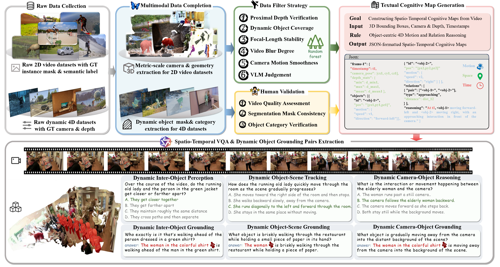
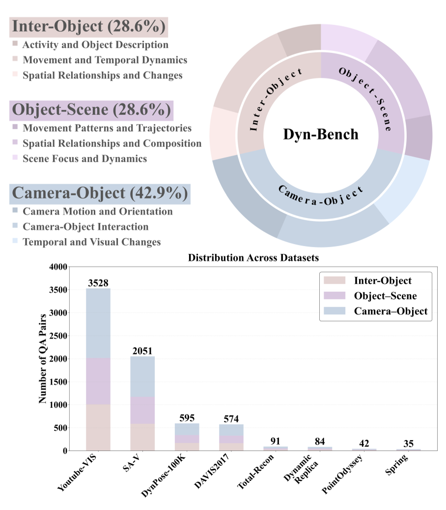
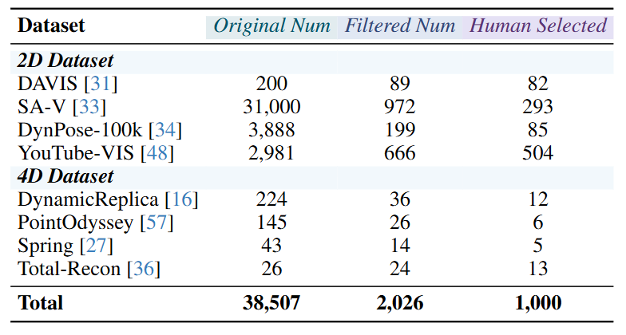
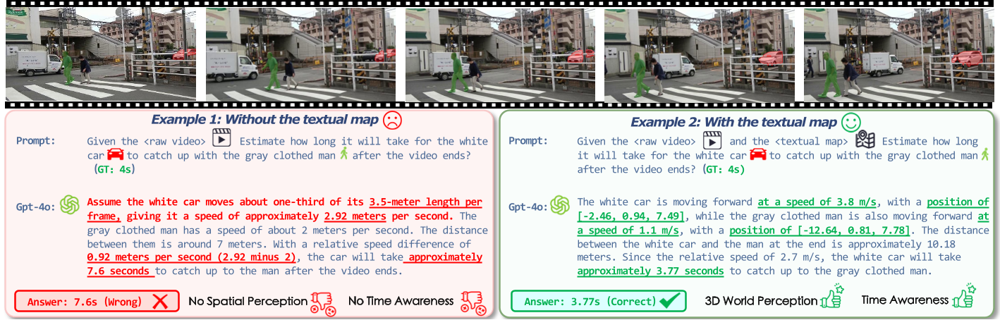
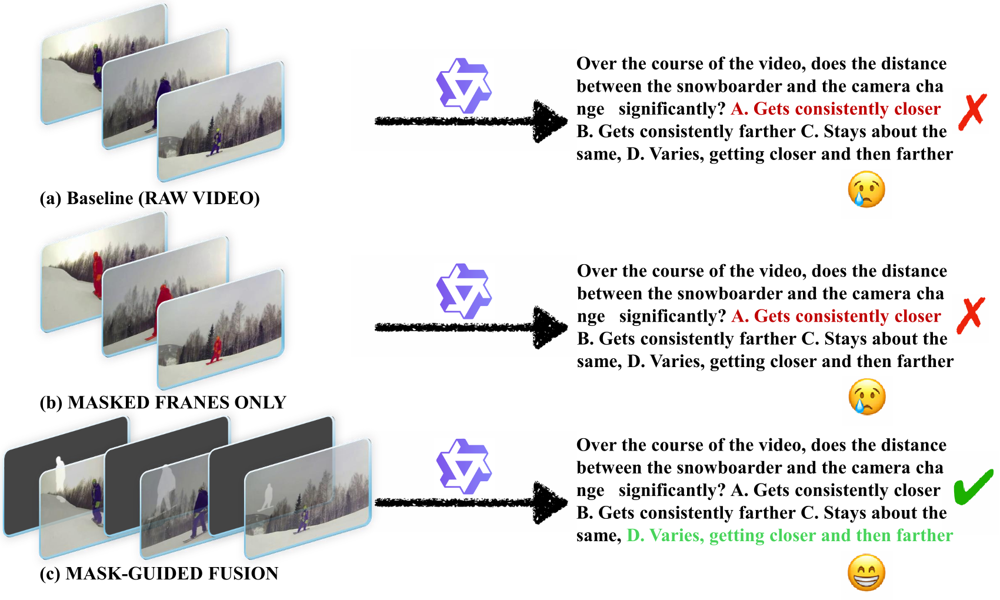

TLDR: Humans inhabit a physical 4D world where geometric structure and semantic content evolve over time, constituting a dynamic 4D reality (spatial with temporal dimension). While current Multimodal Large Language Models (MLLMs) excel in static visual understanding, can they also be adept at “thinking in dynamics”, i.e., perceive, track and reason about spatio-temporal dynamics in evolving scenes? To systematically assess their spatio-temporal reasoning and localized dynamics perception capabilities, we introduce Dyn-Bench, a large-scale benchmark built from diverse real-world and synthetic video datasets, enabling robust and scalable evaluation of spatio-temporal understanding. Through multi-stage filtering from massive 2D and 4D data sources, Dyn-Bench provides a high-quality collection of dynamic scenes, comprising 1k videos, 7k visual question answering (VQA) pairs, and 3k dynamic object grounding pairs. We probe general, spatial and region-level MLLMs to express how they think in dynamics both linguistically and visually, and find that existing models cannot simultaneously maintain strong performance in both spatio-temporal reasoning and dynamic object grounding, often producing inconsistent interpretations of motion and interaction. Notably, conventional prompting strategies (e.g., chain-of-thought or caption-based hints) provide limited improvement, whereas structured integration approaches, including Mask-Guided Fusion and Spatio-Temporal Textual Cognitive Map (ST-TCM), significantly enhance MLLMs’ dynamics perception and spatio-temporal reasoning in the physical 4D world.
 Click to jump to each section.
Click to jump to each section.
We provide a demo video (Raw video➡️Moving Object Recovery➡️Dynamic Point Cloud) to showcase the Metric-scale 4D Reconstruction capability of DynamicGen. The generated fine-grained semantic annotations can be found at subsequent section.
We present Dyn-Bench, a large-scale benchmark for quantitatively evaluating the spatio-temporal reasoning abilities of MLLMs under fine-grained dynamic-object understanding. Dyn-Bench consists of 1k dynamic video scenes with 7k visual question answering pairs and 3k grounding annotations, collected from four 2D video segmentation and four 4D dynamic scene datasets spanning diverse environments, motion patterns, and camera trajectories. As illustrated in Fig. 2, the benchmark is structured into three complementary levels: Dynamic Inter-Object Perception, Dynamic Object-Scene Tracking, and Dynamic Camera-Object Reasoning, each integrating spatio-temporal reasoning and dynamic object grounding tasks. An overview of dataset statistics is provided in Fig. 3.


We develop a robust pipeline to construct Dyn-Bench.
1. Data Collection and Filtering: We construct Dyn-Bench by collecting dynamic videos from four 2D video segmentation datasets (DAVIS, SA-V, DynPose-100K, and YouTube-VIS) and four 4D dynamic-scene datasets (DynamicReplica, PointOdyssey, Spring, and Total-Recon). These datasets provide instance masks, depth maps, and camera poses, enabling accurate question-answer generation and object category annotation. Missing annotations are completed using existing pipelines to ensure cross-modal consistency. To ensure data reliability, we employ a multi-criteria data filter strategy assessing geometric stability, motion smoothness, image sharpness, and depth consistency, supported by VLM-based quality evaluation. Low-quality videos are discarded to maintain visual and geometric fidelity. Filtering statistics are shown in Tab. 1.
2. Question-Answer Generation: Based on the filtered video collection, we employ a ST-TCM in conjunction with Qwen3-VL to construct dynamic-object-centered VQA tasks. The benchmark evaluates MLLMs across three complementary dimensions: Dynamic Inter-Object Perception, focusing on how models perceive and interpret motion interactions and spatial relations among multiple dynamic objects (e.g., approach, occlusion, or overtaking); Dynamic Object-Scene Tracking, capturing how individual objects are temporally tracked and evolve within continuously changing scenes (e.g., entering, leaving, or undergoing functional transitions); and Dynamic Camera-Object Reasoning, assessing how camera motion influences the perceived geometry, depth, and temporal consistency of dynamic objects (e.g., relative translation, rotation, or event order). Each VQA dimension is paired with a corresponding object grounding task that associates the referenced dynamic objects with their instance segmentation masks. Dimension-specific prompting strategies and ST-TCM configurations are applied to Qwen3-VL to ensure focused spatio-temporal reasoning.
3. Spatio-Temporal Textual Cognitive Map Construction: To capture fine-grained object motion and interactions in dynamic scenes, we construct a Spatio-Temporal Textual Cognitive Map (ST-TCM) for each filtered video. Given per-frame RGB-D inputs and segmentation masks, 3D object trajectories are reconstructed to obtain geometric attributes such as position, size, and orientation in world coordinates. We then model inter-object and camera-object relations based on spatial proximity and motion continuity, capturing dynamic behaviors such as interaction and relative movement. All geometric and spatial cues are translated into textual descriptions through a rule-based template system, integrating object geometry, motion, and relational dynamics into a unified spatio-temporal representation. This structured textual form serves as input to Qwen3-VL-235B for dynamic object centered visual question answering and grounding. Detailed implementation procedures are provided in the supplementary material.
4. Human Quality Control: To ensure the reliability and perceptual validity of the filtered videos and generated annotations, we conduct an additional round of human verification covering video quality, mask consistency, VQA accuracy, and dynamic object category identification. Annotators assess camera stability, motion smoothness, and scene complexity to confirm visual quality, and examine segmentation masks to verify temporal coherence and consistent object identity across frames. The generated VQA and grounding pairs are also reviewed to ensure accurate object reference, reasoning-level alignment, and consistency with visual evidence. A summary of the multi-stage filtering and verification process is presented in Tab. 1.

Tab 1: Dataset statistics across Dyn-Bench filtering stages.
Benchmark Models. We evaluate three categories of MLLMs: general, spatial, and region-level models. General MLLMs (e.g., GPT-4o, Qwen3-VL) and spatial MLLMs (SpaceR, VST, Spatial-SSRL, SpatialLadder) lack explicit dynamic object grounding and are therefore evaluated only on spatio-temporal reasoning. In contrast, region-level MLLMs (Sa2VA, UniPixel, VideoGLaMM) are assessed on both spatio-temporal reasoning and dynamic object grounding to measure their fine-grained dynamic understanding.
To benchmark performance on spatio-temporal reasoning, we include two chance baselines: Chance Level (Random), obtained by uniformly sampling answers for multiple-choice questions, and Chance Level (Frequency), obtained by predicting the most frequent answer per task. All models are evaluated in a zero-shot setting using their default instruction templates to ensure consistent and fair comparison.
Metric Design. For the three VQA task levels, we adopt a multiple-choice answering format and use Accuracy (ACC) as the primary evaluation metric, following standard practice. ACC is computed by exact matching over the model's selected multiple-choice option.
For the corresponding object grounding tasks, we employ the video object segmentation metric ℐ&ℱ, which averages region similarity (ℐ) and boundary accuracy (ℱ).
Tab. 2 and Tab. 3 report the overall performance on Dyn-Bench, and corresponding radar results are shown across the three VQA levels. Our findings are summarized as follows:
General MLLM. Proprietary models such as GPT-4o and GPT-5 maintain strong performance in spatio-temporal reasoning, particularly excelling in inter-object understanding through accurate modeling of actions and relational dynamics. In contrast, open-source models have rapidly narrowed the gap, with large-scale systems like Qwen3-VL-235B achieving comparable or even superior overall results, and smaller variants such as LLaVA-OneVision-1.5-8B and Qwen3-VL-32B delivering competitive accuracy despite reduced parameter counts. Overall, proprietary models tend to dominate relational and motion-oriented reasoning, while open-source models demonstrate more balanced generalization across object- and scene-level understanding.
Spatial MLLMs. Compared with general MLLMs, spatial models exhibit stronger performance on geometry-dependent object–scene reasoning, highlighting the value of explicit spatial priors. Within this category, VST-7B-RL attains the strongest overall performance, with SpaceR-7B and SpatialLadder-3B following closely. However, despite their strengths in static and relational spatial tasks, spatial MLLMs remain weaker than both general and region-level models on camera–object interaction and motion-centric reasoning, indicating that spatial priors alone are insufficient for modeling dynamic 4D scenes.
Region-level MLLMs. Models in this category deliver the strongest performance on object-centric spatio-temporal reasoning and dynamic object grounding, enabled by their integration of fine-grained regional cues and localized feature alignment. UniPixel-7B provides the best overall spatio-temporal reasoning within this group, while Sa2VA-based variants achieve the highest grounding accuracy across diverse dynamic settings. Relative to both general and spatial MLLMs, these models exhibit pronounced advantages in motion understanding and relational dynamics, indicating that region-level grounding supplies robust structural priors that enhance temporal coherence and support more reliable interpretation of complex dynamic scenes.
To investigate how MLLMs think in dynamics textually, we first analyze GPT-4o's self-explanations on failure cases from Dyn-Bench to examine its Chain-of-Thought (CoT) behavior in dynamic settings. We then introduce a spatio-temporal textual context module (ST-TCM) as an auxiliary input to qualitatively assess its effect on reasoning. Finally, we conduct an ablation study on three key components, namely temporal semantics, spatial geometry, and motion dynamics, to identify which factors most effectively enhance spatio-temporal reasoning.
Self-explanation refers to an MLLM's ability to articulate intermediate reasoning while generating responses. We examine GPT-4o's self-explanations on Dyn-Bench and present representative success and failure cases in Fig. 4 to illustrate its reasoning strengths and limitations.
Case Studies. Fig. 4 compares GPT-4o's self-explanations in a failure and a success case. In the failure example (Fig. 4, left), the model generates linguistically fluent but physically inconsistent reasoning. When estimating how a white car catches up with a gray-clothed pedestrian, it relies on visual heuristics such as apparent size change across frames rather than metric reasoning, resulting in inaccurate temporal estimation. This reflects a gap between linguistic coherence and physical grounding. In contrast, the success case (Fig. 4, right) demonstrates structured reasoning that integrates motion and relational cues to estimate relative velocities and produce a temporally consistent prediction. These findings suggest that incorporating explicit spatio-temporal cues enables more coherent and causally grounded reasoning about dynamic events.
Error Analysis. GPT-4o's errors in dynamic reasoning can be broadly categorized into three fundamental types:
These errors indicate that GPT-4o lacks structured temporal, spatial, and relational representations, ultimately constraining its ability to reason about motion in a physically coherent manner.

To further investigate how ST-TCM enhances spatio-temporal reasoning and dynamic object grounding, we conduct an ablation over its three components: temporal semantics (T), motion dynamics (M), and spatial geometry (S). We evaluate two representative models under distinct paradigms: the general MLLM Qwen3-VL-8B for spatio-temporal reasoning and the region-level MLLM UniPixel-3B for dynamic object grounding.
As shown in Tab. 4, incorporating ST-TCM components consistently improves both models, though their optimal configurations differ. For Qwen3-VL-8B, motion and spatial cues (M+S) produce the largest gains, highlighting the role of object movement and geometric structure in achieving stable temporal reasoning, whereas temporal cues alone are insufficient. For UniPixel-3B, motion cues offer the primary improvement, and spatial cues mainly refine object–trajectory alignment. The M-only configuration attains the best overall performance.
To examine how MLLMs think in dynamics visually, we conduct qualitative and quantitative analyses to study how explicit visual guidance affects motion understanding. As shown in Fig. 5, we design two input strategies to guide model attention toward dynamic regions.
These strategies explicitly ground visual perception in motion-centric regions, enhancing spatio-temporal alignment and relational reasoning. We evaluate Qwen3-VL-8B under these configurations, using the Raw Video setting as baseline.

The results in Tab. 5 show that mask-guided visual grounding enhances the model's ability to capture dynamic object interactions and maintain temporal consistency. Masked Frames Only offers only minor gains, suggesting limited value from isolated localization cues. In contrast, the Mask-Guided Fusion setting improves all categories, with the largest gains in Inter-Object and Camera-Object reasoning, which demand fine-grained motion and relational understanding. These results show that integrating appearance and motion cues strengthens object grounding and yields more coherent spatio-temporal reasoning.
We study how MLLMs think in dynamics by introducing Dyn-Bench, a comprehensive benchmark designed to evaluate both object-level and scene-level spatio-temporal reasoning and grounding across three representative model categories: general, spatial, and region-level MLLMs. Through this dual textual–visual assessment, we provide a systematic examination of how models perceive, track, and interpret dynamic content in the physical 4D world, including their ability to capture motion patterns, maintain temporal consistency, and model multi-entity interactions.
Our experiments show that the Spatio-Temporal Textual Cognitive Map substantially enhances temporal coherence and relational reasoning by imposing structured linguistic abstraction over dynamic events, while mask-guided visual grounding further strengthens motion perception, improves fine-grained object continuity, and mitigates temporal drift. Taken together, these findings suggest that reliable dynamic understanding in MLLMs emerges from a synergistic coupling between high-level temporal semantics and localized region-level grounding.
Looking ahead, future spatio-temporal MLLMs should integrate dynamic-object perception and temporal reasoning more tightly, motivating unified architectures that jointly model motion dynamics, relational structure, and higher-level temporal cognition to achieve more coherent, physically grounded reasoning in complex and continuously evolving environments.